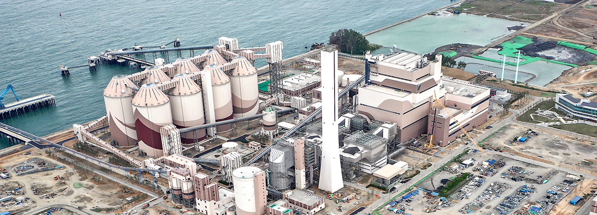

초고효율의 미래형 친환경발전소
신서천발전본부
신서천발전본부 1호기는 1983년3월 과 1983년 11월에 각각 준공되어 34년간 3,400만톤의 국낸 무연탄을 사용하여 794억kWh의 전력량을 생산한 구)서천화력발전소 1,2호기를 폐지한 후 인근 회처리장 부지에 신규로 건설된 석탄 발전소입니다. 신서천발전본부는 1,000㎿용량의 초고효율 초초임계압발전소입니다. 고효율의 USC(Ultra Super Critical)발전소로 효율은 높이고 온실가스배출은 줄이는 동시에 세계 최고 수준의 환경설비 구비 및 석탄분진 비산방지를 위한 사일로(SILO)형 옥내 저탄장 설치 등을 통해 석탄발전소의 환경오염에 대한 우려를 해소할 것으로 기대하고 있습니다.
최신 기술이 적용된 친환경발전소
신서천발전본부는 미세먼지 배출 최소화를 위한 다양한 신공법과 신기술이 적용되었으며 탈황설비는 무누설 가스재열기를 적용 효율을 극대화하였으며 탈질설비의 경우 촉매층을 2단에서 3단으로 추가하여 질소산화물 제거성능을 높였습니다. 또한 효율이 우수한 건식 저저온전기집진기를 채용하여 법적 먼지 배출기준인 10㎎/S㎥ 보다 강화된 3㎎/S㎥를 적용하였습니다.
| 항목 | 단위 | 허가배출기준 | 설계기준 |
|---|---|---|---|
| 황산화물 | ppm | 20 | 15 |
| 질소산화물 | ppm | 12.8 | 10 |
| 먼지 | mg/Sm3 | 4 | 3 |

동백정 복원공사
충청남도 서천군의 동백정 해수욕장은 푸른 동백나무숲과 하얗게 빛나는 백사장이 어우러진 서해안의 대표적 관광명소였으나 1970년대 오일쇼크 이후 에너지자립을 위한 국내 무연탄 발전소를 건설하게 되면서 역사 속으로 사라졌습니다. 한국중부발전은, 국가 산업발전을 위한 안정적 전력공급이라는 막중한 소임을 완수한 구(舊) 서천화력발전소를 철거하고 동백정의 아름다운 절경을 옛 모습 그대로 지역주민의 품으로 돌려주기로 결정했습니다. 40여년전 동백정 해수욕장 모습과 관련된 자료를 수집하고 서천군 및 전문가와 심도있는 협의를 병행하고 있는 한국중부발전은, 화력발전소 철거 후 원래 자연의 모습으로 복원이라는 세계 최초의 도전을 통해 친환경 발전과 탄소중립을 향한 굳은 의지를 표명하고 있습니다. 이를 통해 복원되는 해안선은 마량리동백나무숲과 연계되어 사람에게는 안락한 휴양처를, 자연 동식물에게는 새로운 생존터전을 제공하게 되며, 해양생태계의 복원은 해양동식물이 이산화탄소를 흡수하여 블루카본을 만들어냅니다. 이는 나무에 의존하는 그린카본에 비해 수십배의 온실가스 저감효과를 만들어 낼 것으로 기대됩니다.
신서천발전본부 설비현황
| 화력 | 소수력 | 태양광 | 합계 |
|---|---|---|---|
| 1,018MW | 2.586MW | 1.23MW | 총 1,021.816MW |